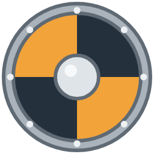
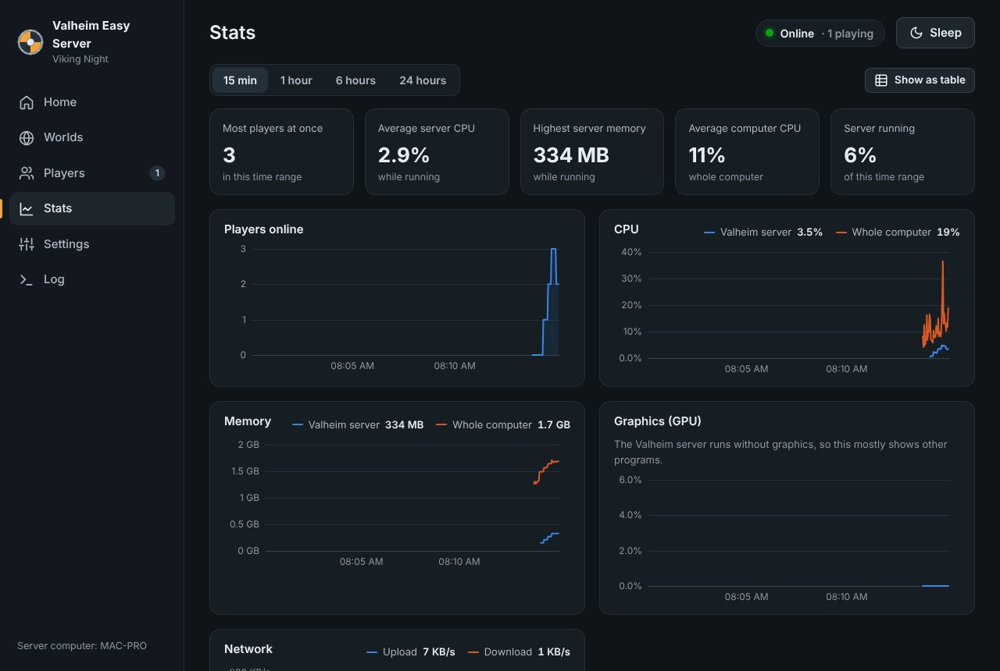

Valheim Easy Server
Your own Valheim server on a spare PC or Mac. One button to start it, nobody touches a command line.
Downloads are coming to this page. Until then, write to support@crowmade.app and we'll send you a copy.

What it does
- Start and stop with one button. Stopping always saves the world first.
- How to join, always visible. The crossplay join code, the address and the password, with copy buttons. Crossplay codes work for Steam, Xbox, PlayStation, Switch and Game Pass players, with no router setup.
- Several worlds. Switch with one click, create new ones with Valheim's presets and modifiers, or drop an existing world onto the app to add it.
- Mods per world, with one code. Riverheim, More World Locations, Seasonality, Plant Everything and more, downloaded from Thunderstore and kept up to date. Each world gets a mods code: friends import it in r2modman or Gale and get every mod they need at once.
- Discord. Posts the join code and the mods code in your channel when the server comes online, and friends can type
/valheimto wake the computer and start it. - Backups. Valheim's own and the app's, listed together. Restore or download any of them.
- Sleep and wake. Saves, stops and puts the computer to sleep, by itself when nobody has played for a while; Wake-on-LAN,
/valheimor the power button brings it back and the server starts again. - Stats, players and records. CPU, memory, GPU and network use; who's online and for how long; who died the most and who lasted longest.
- Looks after itself. Updates the server through Steam before each start, restarts it after a crash, and keeps the app itself up to date.



Get started
- Unzip ValheimEasyServer-windows.zip (or -mac.zip).
- Put it in a folder such as
C:\Valheim Serverand double-click it. On a Mac, drag it into Applications and open it. - Click Install the server, set a name and password in Settings, then Start server. When it says Online, friends can join.
Works on Windows, and on macOS 12 Monterey or newer (Intel or Apple silicon). The control panel only answers on the server computer itself, so there's nothing for strangers to reach. Valheim is a trademark of Iron Gate AB; this is an independent tool.